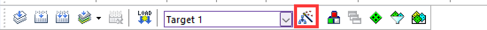
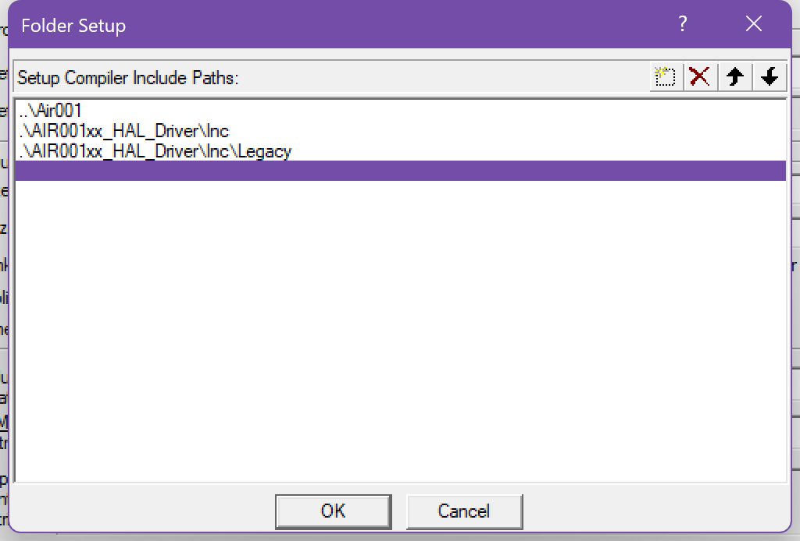
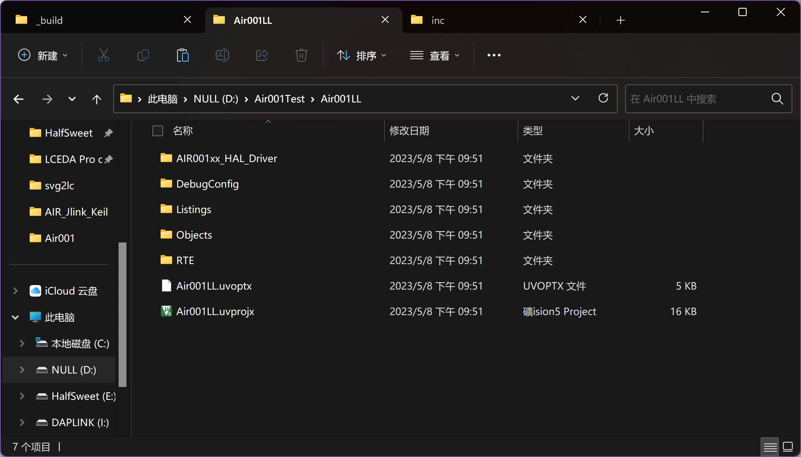
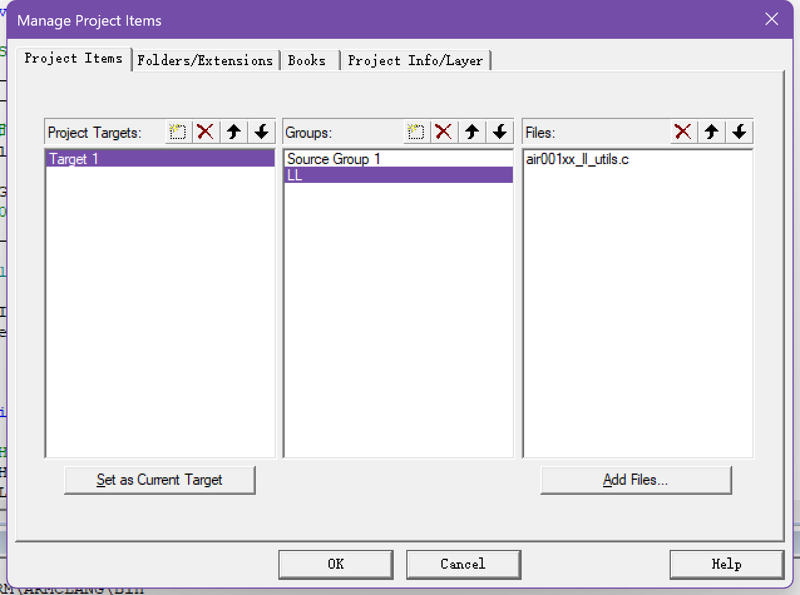
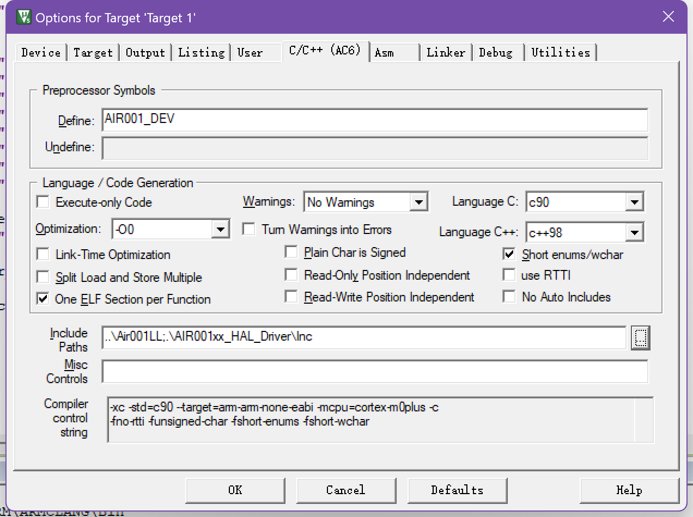
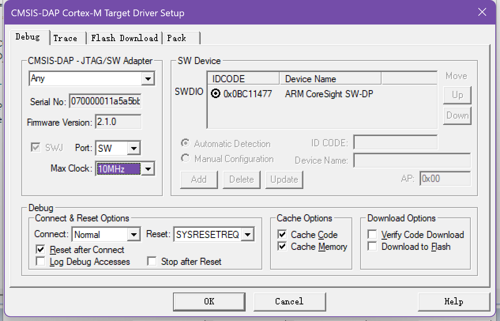

Air001 Keil MDK-based user manual#
Note
You can get the HAL_LL Library Instruction Manual here
SWD Max Clock needs to be manually set to 100KHz or lower when burning.
1. background#
Background: This document mainly solves the problems related to the construction of Keil MDK integrated development environment for Air001 chip, and demonstrates by creating a new project to light up LED.
Technical positioning: junior/intermediate/advanced
Target group: Users developing with Keil MDK
2. the HAL library environment to build (and the following LL library environment to build either）#
Preparations#
Install MDK5, the specific method please Baidu, after installation need to activate to compile large files
Download and install the Air001 chip SDK：https://gitee.com/openLuat/luatos-soc-air001
Install Support Package#
Find the latest version of the pack file in the PACK folder and double-click to install it. After installation, you can see the Air001 device under the Generic of keil device list.
New construction#
0x00 New construction#
Click on the menu bar Project->New μVision Project

Create a folder and project name, and select the path according to your actual choice.

0x01 Select device#
Select AIR001 in the AIR001 Series under AirM2M in the device list AIR001Dev
0x02 Adding CMSIS CORE and Startup Files#
Check the CORE under CMSIS and the Startup under Device to automatically configure the startup file.

0x03 Add HAL Library#
Here, we use the HAL library as an example. We need to copy the AIR001xx_HAL_Driver folder under the Libraries directory in the SDK folder to the project directory. The added project directory is like this

0x04 Adding HAL Library Peripheral Source Files#
Add the source files of the peripherals used in Keil. A minimum project based on HAL library needs to add at leastair001xx_hal_rcc.c、air001xx_hal_rcc_ex.c、air001xx_hal_pwr.c、air001xx_hal_pwr_ex.c、air001xx_hal_cortex.c、air001xx_hal_flash.c、air001xx_hal.c
Add main.c file

After completely added as shown in the figure

0x05 Add the hal conf header file#
To use the HAL library, you need to define aair001xx_hal_conf.hfile for configuration. Here we create one

A typical example is
#ifndef __AIR001xx_HAL_CONF_DEFAULT_H
#define __AIR001xx_HAL_CONF_DEFAULT_H
#ifdef __cplusplus
extern "C" {
#endif
#define HAL_MODULE_ENABLED
#define HAL_GPIO_MODULE_ENABLED
#define HAL_RCC_MODULE_ENABLED
#define HAL_FLASH_MODULE_ENABLED
#define HAL_PWR_MODULE_ENABLED
#define HAL_CORTEX_MODULE_ENABLED
#define HSE_VALUE 8000000U
#define HSE_STARTUP_TIMEOUT 100U
#define HSI_VALUE 24000000U
#define HSI_STARTUP_TIMEOUT 5000U
#define LSI_VALUE 32000U
#define LSE_VALUE 32768U /*!< Value of the External Low Speed oscillator in Hz */
#define LSE_STARTUP_TIMEOUT 5000U /*!< Time out for LSE start up, in ms */
#define TICK_INT_PRIORITY 0x00U /*!< tick interrupt priority */
#include "air001xx_hal_rcc.h"
#include "air001xx_hal_gpio.h"
#include "air001xx_hal_flash.h"
#include "air001xx_hal_pwr.h"
#include "air001xx_hal_cortex.h"
#define assert_param(expr) ((void)0U)
#ifdef __cplusplus
}
#endif
#endif
0x06 Add necessary break file#
A minimum project requires at least some interrupt functions, we need to manually add
Create a new
air001xx_it.hheader file, a typical example is as follows
#ifndef __AIR001XX_IT_H
#define __AIR001XX_IT_H
#ifdef __cplusplus
extern "C" {
#endif
void NMI_Handler(void);
void HardFault_Handler(void);
void SVC_Handler(void);
void PendSV_Handler(void);
void SysTick_Handler(void);
#ifdef __cplusplus
}
#endif
#endif
Create a new
air001xx_it.csource file, a typical example is as follows：
#include "air001xx_it.h"
void NMI_Handler(void)
{
}
void HardFault_Handler(void)
{
while (1)
{
}
}
void SVC_Handler(void)
{
}
void PendSV_Handler(void)
{
}
void SysTick_Handler(void)
{
HAL_IncTick();
}
0x07 Add a header file reference#
Click the magic wand button in the toolbar to open the Options for Target window

Enter the C/C page and click the three dots after
Include path
Here we add two directories, one is the
air001xx_hal_conf.hfile directory, and the other is the header file directory required by the HAL library, as shown in the following figure

0x08 Add Macro Definition#
Click the magic wand button in the toolbar to open the Options for Target window
Enter the C/C page and add the AIR001_DEV macro, as shown in the following figure

0x09 Modifying the main.c File#
A typical example is as follows
#include "air001xx_hal.h"
int main(void)
{
HAL_Init();
GPIO_InitTypeDef GPIO_LED = {
.Pin = GPIO_PIN_0,
.Mode = GPIO_MODE_OUTPUT_PP,
};
__HAL_RCC_GPIOB_CLK_ENABLE();
HAL_GPIO_Init(GPIOB, &GPIO_LED);
while (1)
{
HAL_GPIO_TogglePin(GPIOB, GPIO_PIN_0);
HAL_Delay(500);
}
}
Click the Compile button to test whether the compilation is successful.

The open source link for this sample project ishttps://gitee.com/openLuat/luatos-soc-air001/tree/master/ModuleDemo/Templates/Example_HAL
FAQ#
An error such as Error: L6985E: Unable to automatically place AT section system_air001xx.o(.ARM._at_0x20000000) with required base address 0x20000000. Please manually place in the scatter file using the -- no_autoat option.#
In this case, generally speaking, there is no corresponding interrupt function/no macro required for HAL. You can manually check whether there are any errors.
2. LL library environment construction (choose one from the previous HAL library environment construction）#
Preparations#
Install MDK5, the specific method please Baidu, after installation need to activate to compile large files
Download and install the Air001 chip SDK：https://gitee.com/openLuat/luatos-soc-air001
Install Support Package#
Find the latest version of the pack file in the PACK folder and double-click to install it. After installation, you can see the Air001 device under the Generic of keil device list.
New construction#
0x00 New construction#
Create a folder and project name, and select the path according to your actual choice.
0x01 Select device#
Select AIR001 in the AIR001 Series under AirM2M in the device list AIR001Dev
0x02 Adding CMSIS CORE and Startup Files#
Check the CORE under CMSIS and the Startup under Device to automatically configure the startup file.
0x03 Add LL Library#
Here we use LL library as an example, we need to copy the AIR001xx_HAL_Driver folder under the Libraries directory in the SDK folder to the project directory, and the added project directory is probably like this

0x04 Add LL library peripheral source files#
Add the source files of the peripherals used in Keil. A minimum LL library-based project needs to add at leastair001xx_ll_utils.c

Add main.c file

This is similar after all additions are completed.
0x06 Add a reference to the header file#
Click the magic wand button in the toolbar to open the Options for Target window
Enter the C/C page and click the three dots after
Include path
Here we add two directories, one is the directory under
main.cand the other is the header file directory required by LL library, as shown in the following figure
0x07 Add chip macro definition#
Click the magic wand button in the toolbar to open the Options for Target window
Enter the C/C page and add the AIR001_DEV macro, as shown in the following figure

0x08 Modifying the main.c File#
A typical example is as follows
#include "main.h"
static void SystemClock_Config(void);
int main(void)
{
/* ON SYSCFG AND PWR CLOCKS */
LL_APB1_GRP2_EnableClock(LL_APB1_GRP2_PERIPH_SYSCFG);
LL_APB1_GRP1_EnableClock(LL_APB1_GRP1_PERIPH_PWR);
// Configure Clock
SystemClock_Config();
LL_IOP_GRP1_EnableClock(LL_IOP_GRP1_PERIPH_GPIOB); // enable GPIOB clock
// Configure the PB0 pin as an output
LL_GPIO_SetPinMode(GPIOB, LL_GPIO_PIN_0, LL_GPIO_MODE_OUTPUT);
while (1)
{
LL_GPIO_TogglePin(GPIOB, LL_GPIO_PIN_0);
LL_mDelay(1000);
}
}
static void SystemClock_Config(void)
{
// enable HSI
LL_RCC_HSI_Enable();
while (LL_RCC_HSI_IsReady() != 1)
{
}
// Turn on the AHB clock
LL_RCC_SetAHBPrescaler(LL_RCC_SYSCLK_DIV_1);
// Use the HSI as the system clock
LL_RCC_SetSysClkSource(LL_RCC_SYS_CLKSOURCE_HSISYS);
while (LL_RCC_GetSysClkSource() != LL_RCC_SYS_CLKSOURCE_STATUS_HSISYS)
{
}
// Set the APB1 clock
LL_RCC_SetAPB1Prescaler(LL_RCC_APB1_DIV_1);
LL_Init1msTick(8000000);
// Set the system clock
LL_SetSystemCoreClock(8000000);
}
void Error_Handler(void)
{
while (1)
{
}
}
#ifdef USE_FULL_ASSERT
void assert_failed(uint8_t *file, uint32_t line)
{
while (1)
{
}
}
#endif
Click the Compile button to test whether the compilation is successful.

The open source link for this sample project ishttps://gitee.com/openLuat/luatos-soc-air001/tree/master/ModuleDemo/Templates/Example_LL
Note
It should be noted that LL library is Header-Only, which means that if we need to introduce a new peripheral, we only need to add the corresponding header file in main.h instead of manually adding peripheral source files like HAL library
3. Download Burn#
Use a debugger that supports SWD to connect SWCLK(PA14) and SWDIO(PA13) of Air001 chip respectively. It is recommended to use a combined DAP-Link debugger connection.
Note
If it is a purchased whiteboard and a DAPLink debugger, it can be directly connected to the mother through the pin row, and the direction is shown in the figure.

Click the magic wand button in the toolbar to open the Options for Target window
Enter the Debug page and select the emulator.CMSIS-DAP Debugger

Enter the setting interface, Port is set to SW,Max Clock defaults to 10MHz with high probability, and the rate needs to be manually reduced to 100KHz or lower.

Enter the
Flash Downloadpage, select the corresponding algorithm according to the model of the target chip, and tick theReset and Run

Click the
Downloadbutton to see the compiled code downloaded automatically and run it.